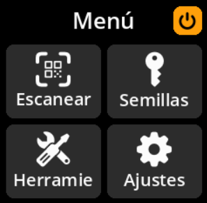
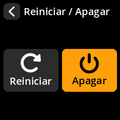

Apagado Seguro¶
Método 1: Apagado Correcto
Navega hasta el ícono de encendido (esquina superior derecha del menú principal)

Presiona cualquier tecla para abrir el menú de encendido

Selecciona “Apagar” y confirma tu selección
Método 2: Desconexión Directa Puedes desconectar el dispositivo de forma segura en cualquier momento. SeedSigner no almacena nada de forma permanente, por lo que todos los datos confidenciales se borran automáticamente cuando se corta la energía.